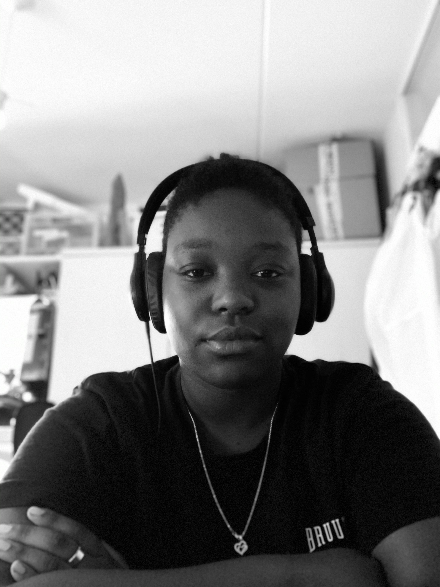

I am (for the most part)
a self taught front-end developer.

About
Hi, I'm Tyra. I am a Junior Front-End developer who is for the most part self-taught. I say this because
eventhough I am still in school, it is going way to slow for me. I decided to learn some advanced things,
mainly in css. I also have recently started learning JavaScript and will soon bring out projects where I
have implemented some basic JavaScript.
I am a person who likes to work efficient and as precise as possible. I'm someone who likes the minimalistic but proffesional looks. I don't define myself by the projects I have done in the past but by the projects I am yet
to create.
The projects in the past are projects where I show what I can do. But the projects I am yet to create, are projects
that show what I have learnt and what I am going to be able to do.
Criticism is not a problem for me, it is rather good I get to hear what I can do better in the next situation. I am a person who is eager to learn new things everyday which makes it easier for me to adapt in new work environments.
If your're looking for a person who asks allot of questions, you're at the right address.
I think it is importont for me to keep expanding my knowledge in any way possible. That's why I love to learn.
By learning new frameworks or languages, I can eventually expand myself from Front-End developer to Full-Stack
and be of more use to the company.
I like to develop expertise in a number of areas over the course of my life and career in Web Development.
My personality is introverted but I am extroverted when I have to. I have pretty good social skills and speaking
infront of a large congregation is never a problem for me
You can read more about my skills, education and character in the pdf below: